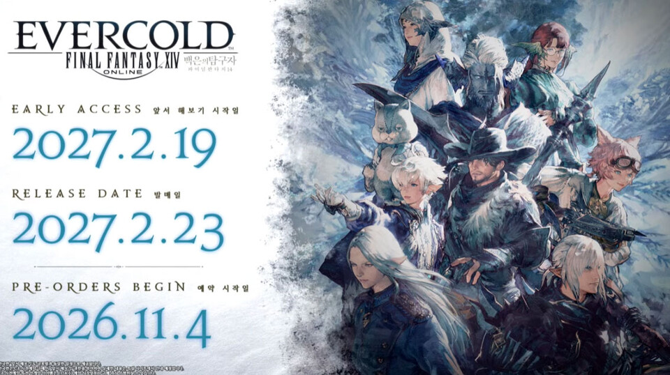
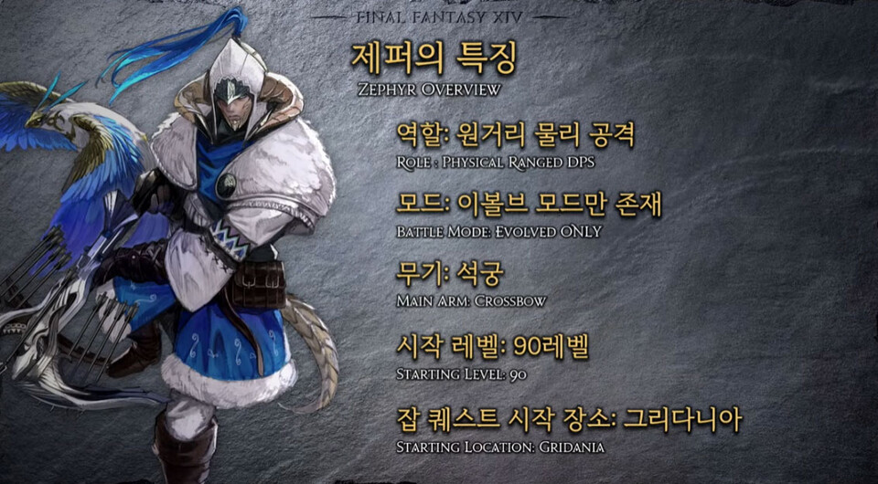
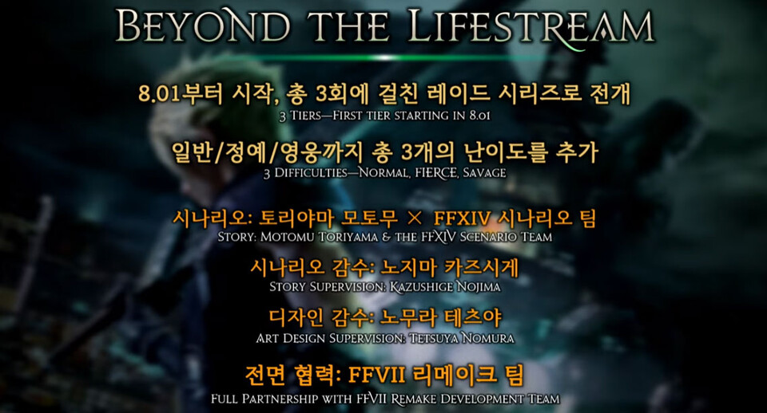
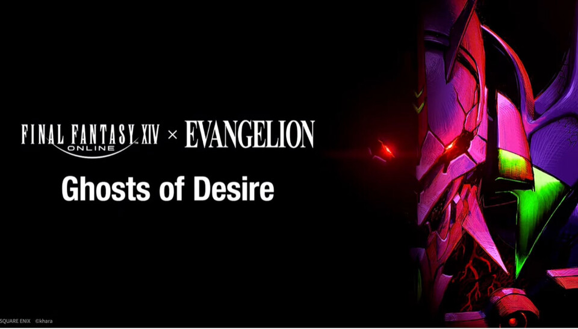
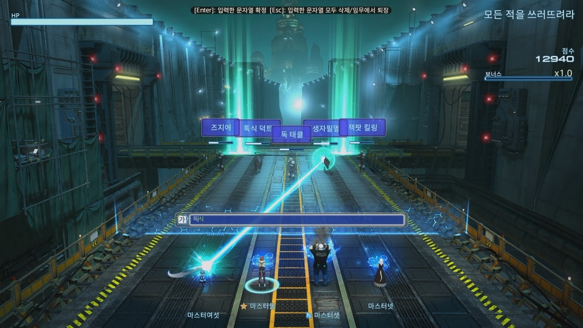
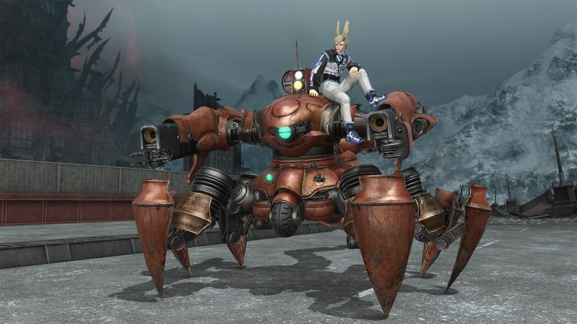
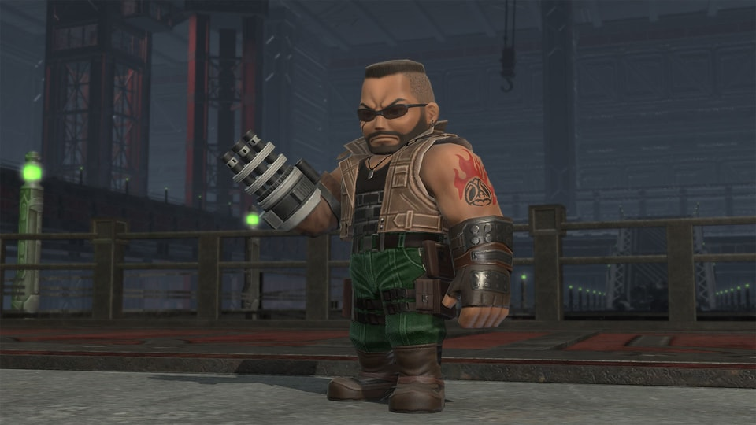

온라인게임추천 파이널판타지14 V8.0 백은의 탐구자 날짜 확정, 마법자판 난타전 정리, 헬스케어 마감 D-8
안녕하세요, 영원한도시입니다. 파이널판타지14 V8.0 '백은의 탐구자' 날짜가 드디어 나왔는데요, 10월 31일 도쿄 팬페스티벌 기조강연에서 사전예약ㆍ앞서 해보기ㆍ발매일이 한꺼번에 공개됐습니다. 다만 발매까지는 석 달 넘게 남아 있어서, 그 사이엔 지금 열려 있는 이벤트부터 챙기는 쪽이 이득이에요. 마법자판 난타전은 V8.0 업데이트 전까지, 모험가 맞춤 헬스케어 프로그램은 11월 11일(수) 23:59까지라 마감이 8일 남았습니다. V8.0 기대 포인트를 먼저 정리하고, 지금 바로 할 수 있는 이벤트 두 개를 차례로 짚어 볼게요.
1. V8.0 백은의 탐구자 날짜 3개
V8.0 백은의 탐구자는 사전예약이 2026년 11월 4일, 앞서 해보기가 2027년 2월 19일, 정식 발매가 2027년 2월 23일입니다. 기조강연 슬라이드에 세 날짜가 한국어로 나란히 적혀 있었고, 당초 목표였던 2027년 1월보다 약 3주 뒤로 밀린 일정이에요. 주인장은 늦어진 만큼 완성도로 돌려받길 바라는 쪽입니다.

보시면 로고 아래에 예약ㆍ앞서 해보기ㆍ발매일이 한 장에 정리돼 있어요.
이미지 출처: 게임인사이트(팬페스티벌 2026 도쿄 기조강연 자료)
사전예약은 11월 4일부터라 이 글을 쓰는 지금은 아직 열리기 전이에요. 공식 패치 페이지에는 사전예약 기간 내 콜렉터즈 에디션을 구매하면 사전예약 특전으로 장신구 할로네 귀걸이와 꼬마 친구 코트르 인형이 더해지고, 콜렉터즈 특전으로 탈것 발할라 오딘 뿔피리ㆍ감정 표현 크리스탈에 기도하기ㆍ무기 크리스탈 마갑이 안내돼 있어요. 다만 혜택 구성은 바뀔 수 있으니 판매가와 에디션별 내용은 11월 4일 공식 공지에서 확인하세요. 앞서 해보기는 사전예약 기간 내 콜렉터즈 에디션을 구매하고 황금의 유산 특정 퀘스트를 완료해야 권한이 주어진다고 하는데, 다른 에디션 포함 여부도 그 공지에서 봐야 해요.
2. 신규 잡 제퍼, 석궁 원거리 물리 공격
제퍼는 석궁을 쓰는 원거리 물리 공격 잡이고, 시작 레벨은 90이며 잡 퀘스트는 그리다니아에서 시작합니다. 공식 슬라이드의 '제퍼의 특징'을 보면 이볼브 모드만 존재한다고 적혀 있어요. 7월에 공개된 방어 역할 '바스티온'(대방패를 닮은 무기 '마갑')에 이어 신규 잡 2종이 갖춰진 거죠.

슬라이드가 알려 주는 제퍼 스펙은 이 정도예요.
이미지 출처: 게임인사이트(팬페스티벌 2026 도쿄 기조강연 자료)
석궁이라는 무기가 눈에 들어와서, 주인장은 일단 어떤 스킬이 붙을지부터 궁금하더라고요. 스킬 구성과 이볼브 모드의 세부 동작은 아직 제대로 공개되지 않았더라고요.
3. 주간 활동 포인트와 시즌제
V8.0부터 일일 보상이 주간 '활동 포인트'로 바뀌고, 메인 스토리ㆍ던전ㆍ채집ㆍPvP 등 무엇을 해도 포인트가 쌓입니다. 매일 같은 숙제를 돌려야 하던 흐름이 일주일 단위로 풀리는 셈이에요. 여기에 두 메이저 패치를 묶어 한 시즌으로 운영하는 '시즌제'도 들어오는데, 요시다 PD는 시즌패스 같은 부분유료화는 넣지 않는다고 밝혔대요(게임인사이트 기사 기준). 접속이 뜸했던 분이라면 복귀 부담이 꽤 가벼워질 구성이네요.
4. 도전의 장과 연합 레이드 개편
V8.0에는 전투 직업 4명이 기존 던전 보스를 연속으로 클리어하는 신규 콘텐츠 '도전의 장'이 들어오고, 연합 레이드는 전반ㆍ후반으로 나뉘어 각각 매칭됩니다.
도전의 장 세부 조건은 아직 안 나왔더라고요, 공개되는 대로 확인해 볼게요. 연합 레이드에는 8인 '영웅' 난이도도 새로 생기고, 스토리는 특정 지점 이후 3개 지역을 순서와 상관없이 골라 갈 수 있어요. 여기에 FF7 콜라보 레이드 '라이프 스트림 너머'가 8.01부터 총 3회, 일반ㆍ정예ㆍ영웅 난이도로 이어집니다.

FF7 콜라보 '라이프 스트림 너머'는 8.01부터 총 3회, 일반ㆍ정예ㆍ영웅으로 나뉘어요.
이미지 출처: 게임인사이트(팬페스티벌 2026 도쿄 기조강연 자료)
5. 에반게리온 콜라보 욕망의 잔상
에반게리온 콜라보 '욕망의 잔상(Ghosts of Desire)'은 khara 감수의 신규 24인 연합 레이드 시리즈이고, 참여 조건ㆍ보상ㆍ일정은 한국 공식에 아직 나오지 않았습니다.
4월 25일 애너하임에서 처음 발표됐고, 이번 도쿄에서 새 예고편이 처음 공개됐어요(게임인사이트 기사 기준). 해외 매체는 실제 플레이 장면이 몇 초뿐이었다고 전했고, 예고편 외 새 정보는 거의 없었어요. 게스트 크리에이터 마에다 마히로 합류는 7월에 이미 발표된 소식이고요.

타이틀 한 장이 지금 공개된 정보의 거의 전부예요.
이미지 출처: 게임인사이트(팬페스티벌 2026 도쿄 기조강연 자료)
6. 마법자판 난타전 규칙과 참여 조건
마법자판 난타전은 맨더빌 골드 소서에서 최대 4명이 키보드로 문자를 입력해 싸우는 기간 한정 타자 게임 임무이고, 2026년 10월 28일(수) 17:00부터 V8.0 업데이트 전까지 열립니다.
게임패드와 소프트웨어 키보드로는 할 수 없고, 콜라보 스테이지는 FINAL FANTASY VII 리메이크 시리즈예요. MGC를 얻고 교환하는 것도 기간 중에만 되는데요, 놓치면 못 받아요. 종료 후에는 비정기적으로 다시 열린다고 하지만, 정확한 종료 시각은 V8.0 점검 공지에서 확인하세요.

이미지 아래쪽이 입력창이고, 적 머리 위 글자를 그대로 치면 공격이 나갑니다.
이미지 출처: 파이널판타지14 공식 이벤트 페이지
참여 순서는 세 단계입니다.
- 레벨 15에 부가 퀘스트 '가자, 매혹의 오락장으로'를 받으세요. 울다하 날 회랑 X9.6 Y9.0 '씀씀이가 큰 청년'에게서 받고, 선행으로 주요 퀘스트 '바다의 도시와 사막의 도시'ㆍ'바다의 도시와 숲의 도시'ㆍ'숲의 도시와 사막의 도시' 중 하나를 끝내야 합니다.
- 이벤트 퀘스트 '치고 쳐서 지켜 내라!'를 받으세요. 골드 소서 X5.4 Y7.0 '고양이 마법인형'이 담당이고, 이벤트 기간 중에만 수락할 수 있어요.
- 난타전에 도전해 MGC를 모으세요. 교환원은 마법자판 광장 X6.2 Y6.0에 있습니다.
7. MGC 교환표 핵심 보상과 합산
가장 눈에 띄는 보상은 탈것 '가드 스콜피온 인증 열쇠'(430 MGC)와 '아발란치 격투가' 장비 세트(5부위 합 1,570 MGC)입니다. 이 격투가 세트는 후기에서 티파 의상으로 불려요. 공식 교환표의 핵심만 추리면 이렇습니다.
| 보상 | 필요 MGC |
|---|---|
| 탈것 가드 스콜피온 인증 열쇠 | 430 |
| 아발란치 격투가 상의ㆍ하의 (각) | 430 |
| 아발란치 격투가 손등장갑ㆍ장화 (각) | 260 |
| 아발란치 격투가 귀걸이 | 190 |
| 바레트 인형 | 260 |
| 오케스트리온 악보 3종 (각) | 190 |
| 초상화 교재: 마법자판 난타전 | 190 |
| 연기 교본: 마법자판 치기 | 260 |
| 마법자판 난타전 보물상자 | 910 |
계산해 보면 격투가 5부위가 1,570 MGC이고, 탈것까지 더하면 정확히 2,000 MGC입니다. 같은 값으로 '아발란치 리더' 6부위는 1,760 MGC가 들어요. 한 번에 얻는 MGC 양은 공식 페이지에 나와 있지 않아서, 풀세트가 몇 판 분량인지는 직접 돌려 보며 가늠해야 합니다.

430 MGC짜리 탈것 가드 스콜피온입니다.
이미지 출처: 파이널판타지14 공식 이벤트 페이지
격투가 풀세트 착용 컷이 들어갈 자리입니다.
8. 이용자 후기 체감과 팁
한 이용자는 첫날 새벽까지 약 9시간을 들여 2캐릭터를 끝냈다는 루리웹 후기를 남겼는데, 개인 체감이라 시간은 사람마다 다를 거예요.
같은 후기 기준으로 1캐릭터에서 탈것ㆍ감정 표현ㆍ악보 3종ㆍ꼬마 친구ㆍ초상화 교재를 받았고, 2캐릭터째에 티파와 바레트 의상이 더해졌다고 해요. 반대로 댓글에는 재미없고 길다는 반응도 있었어요.
후기에서 건진 팁은 두 가지예요. 잡몹은 평소대로 잡고, 보스 궁극기 때(처음 1~2회) 피해를 줄여 주는 앞 글자부터 같이 입력해 도와주세요. 그리고 3회째부터는 보스 체력이 1~3%쯤 남는다는데, 그때부터는 보스만 집중 공격하면 된다고 해요. 저도 이벤트 끝나기 전에 한 번은 돌려 보고 싶네요 ㅋㅋ

260 MGC짜리 바레트 인형입니다.
이미지 출처: 파이널판타지14 공식 이벤트 페이지
9. 모험가 맞춤 헬스케어 프로그램 마감 D-8
모험가 맞춤 헬스케어 프로그램은 2026년 11월 11일(수) 23:59에 끝나고, 보상 수령은 12월 9일(수) 23:59까지 가능합니다. 예전 안내의 11월 9일ㆍ12월 7일은 10월 23일 공지로 각각 11일ㆍ9일로 바뀌었으니, 옛 이미지 속 날짜는 무시하세요. 마감까지 8일 남았습니다.
미션은 두 갈래예요. 하나는 이벤트 아이템 '자색 당근 주스' 사용이고, 다른 하나는 일일 미션입니다.
- 주스 미션 — 계정당 한 번 30개가 지급되고 '자색 당근 주스 1개 사용하기'를 기간 중 최초 1회 하면 됩니다. 요리로 기술 시전 속도 +8%(최대 40), 활력 +8%(최대 43), 경험치 획득량 +3%가 30분간 붙어요. 받은 주스는 지급일로부터 30일이 지나면 사라지니 크리스탈샵 > 아이템 보관함 > 이벤트 아이템에서 꺼내 쓰세요.
- 일일 미션은 무작위 임무 5종(레벨링ㆍ숙련자ㆍ토벌전ㆍ일반 레이드ㆍ일일 도전: 전장) 중 하루 2개를 끝내면 '일일 미션 참여 완료'가 돼요.
- 유의 — 계정 단위이고, 완료한 다음 날 오전에 참여 내역이 반영됩니다. 판정은 매일 00:00~23:59 완료 시각 기준이에요.
보상은 미션 완료 누적 횟수로 받습니다.
| 누적 횟수 | 보상 |
|---|---|
| 3회 | 스타일카탈로그 뿔테 안경 (얼굴 소품) |
| 7회 | 연기 교본: 분노에 떨기 (감정 표현) |
| 10회 | 잠옷 세트 3종(민무늬ㆍ사보텐더ㆍ초코보) 중 1종 선택 |
| 15회 | 탈것 파에톤 |
| 20회 | 꼬마 친구 하늘다람쥐 |
보상 착용 컷이 들어갈 자리입니다.
기간이 30일이라 일일 미션만으로도 20회에 닿는 구조지만, 지금은 남은 날이 한정돼 있으니 오늘부터 하루 2개씩 끝내 두는 게 낫겠어요. 주스 미션이 누적 횟수에 들어가는지는 페이지에 따로 적혀 있지 않았어요.
여기까지 V8.0 백은의 탐구자 날짜와 제퍼ㆍ주간 활동 포인트ㆍ도전의 장, 그리고 지금 열려 있는 두 이벤트를 정리했는데요. 헬스케어는 11월 11일 마감이니 일일 미션부터 끝내 두시고, 난타전은 V8.0 점검 전까지 여유가 있으니 주말에 느긋하게 달려 보세요. 한동안 접속이 뜸했던 분이라면 V8.0 전에 이벤트 보상을 챙기면서 감을 되찾는 것도 좋은 복귀 코스일 거예요! V8.0 사전예약이 열리는 11월 4일 공식 공지도 잊지 마세요.
참고한 곳
· 파이널판타지14 공식 — V8.0 패치 안내
· 파이널판타지14 공식 — 마법자판 난타전
· 파이널판타지14 공식 — 모험가 맞춤 헬스케어 프로그램
· 게임인사이트 — 팬페스티벌 2026 도쿄 기조강연 정리
▶ 같이 보면 좋은 글
· 온라인게임추천 파이널판타지14 V7.56 마수 조련사 업데이트 완료!
· 온라인게임추천, 파이널판타지14 V7.5 업데이트 클리테우스 마도 공장 꿀잼
· 파이널판타지14 7.45 업데이트 변형 던전 상인 이야기 탐방기, 동화 같은 MMORPG